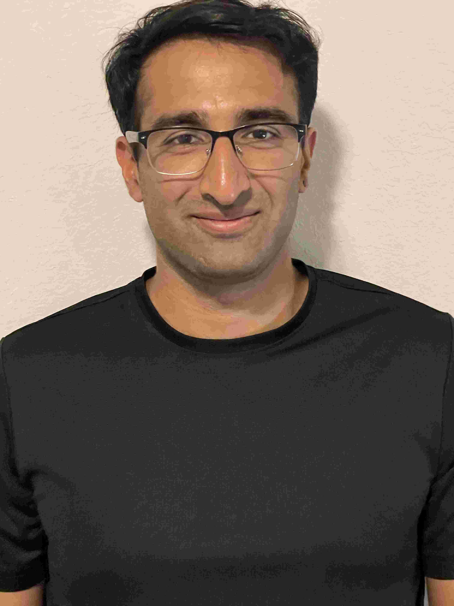

Vijay Thurimella
vthurimella at gatech dot edu
College of Computing
Klaus Advanced Computing Building, Rm. 3110
Georgia Institute of Technology
266 Ferst Drive
Atlanta, GA 30332-0765
I'm generally interested in computer systems. Right now, I'm specifically into cloud systems, distrbuted systems and
more recently systems for ML.
Publications
Proactive Serverless Resource Management
Erika Hunhoff, Shazal Irshad, Vijay Thurimella, Ali Tariq, Eric Rozner.
ACM Sixth International Workshop on Serverless Computing (WoSC6), TU Delft, Netherlands, 2020. [Paper PDF]